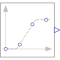

RampGenerate ramp signal based on counted clock ticks |

|
Information
This information is part of the Modelica Standard Library maintained by the Modelica Association.
The Real output y is a ramp signal. The signal is defined in terms of clock ticks instead of simulation time:

Parameters (4)
| height |
Value: 1 Type: Real Description: Height of ramps |
|---|---|
| durationTicks |
Value: 1 Type: Integer Description: Durations of ramp in number of clock ticks |
| offset |
Value: 0 Type: Real Description: Offset of output signal |
| startTick |
Value: 1 Type: Integer Description: Output y = offset for clock tick < startTick |
Connectors (1)
| y |
Type: RealOutput Description: Connector of clocked, Real output signal |
|---|
Used in Examples (1)
|
Modelica.Clocked.Examples.Elementary.RealSignals Example of using the clocked tick based Ramp source block |